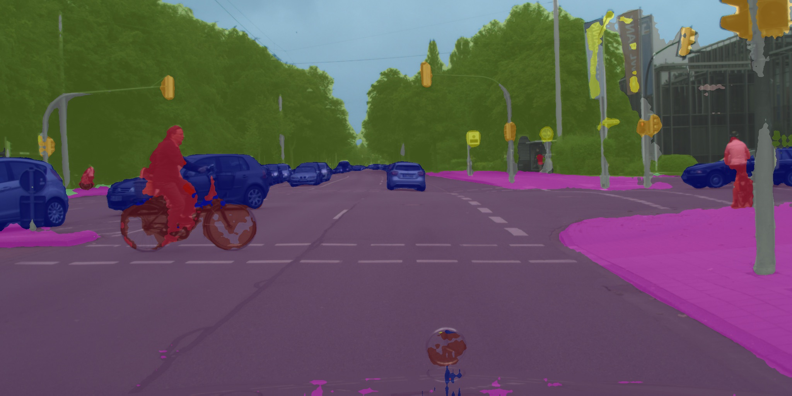

Self-Supervised Representation Learning from Flow Equivariance
Abstract
Self-supervised representation learning is able to learn semantically meaningful features; however, much of its recent success relies on multiple crops of an image with very few objects. Instead of learning view-invariant representation from simple images, humans learn representations in a complex world with changing scenes by observing object movement, deformation, pose variation and ego motion. Motivated by this ability, we present a new self-supervised learning representation framework that can be directly deployed on a video stream of complex scenes with many moving objects. Our framework features a simple flow equivariance objective that encourages the network to predict the features of another frame by applying a flow transformation to the features of the current frame. Our representations, learned from high-resolution raw video, can be readily used for downstream tasks on static images. Readout experiments on challenging semantic segmentation, instance segmentation, and object detection benchmarks show that we are able to outperform representations obtained from previous state-of-the-art methods including SimCLR [6] and BYOL [18].
1 Introduction
Rich and informative visual representations epitomize the revolution of deep learning in computer vision in the past decade. Deep neural nets deliver surprisingly competitive performance on tasks such as object detection [15, 34, 9] and semantic segmentation [4, 50]. Until very recently, visual representations have been learned by large scale supervised learning. However, for more challenging tasks such as semantic or instance segmentation, it is much more expensive to obtain labels compared to object classification. On the other hand, the human brain learns generic visual representations from raw video of the complex world without much explicit supervision. This is the direction that we would like to get one step closer towards in this paper.

Recent advances in self-supervised or unsupervised representation learning, such as SimCLR [6] and BYOL [18], seem to point us to a bright path forward: by simply minimizing the feature distance between two different views of a single image, and performing linear readout at test time on top, state-of-the-art approaches are now able to match the classification performance of networks trained with full supervision end-to-end [23, 36, 21]. While not using any class labels, these methods still rely on the dataset curation process of carefully selecting clean and object-centered images with a balanced class distribution. In contrast, videos in the wild feature crowded scenes and severe data imbalance. As a result, different crops of the same frame can often lead to either uninteresting regions or erroneous alignment of different instances in crowded areas. Moreover, none of these methods leverage temporal information, which contains a rich set of object movement, deformation, and pose variations. While there has been a large body of literature on learning representation from video [43, 24, 44, 35, 12, 13, 41, 42], they typically focus on the predicting correspondence across frames and have not shown better performance on generic downstream tasks such as semantic and instance segmentation than pretrained supervised representations from ImageNet [20].
In this paper, we are interested in learning generic representation from raw high-resolution videos that are directly useful for object detection as well as semantic and instance segmentation. Whereas prior invariance-based learning algorithms completely disregard ego-motion and flow transformations across frames, we argue these are essential elements responsible for the learning of visual representations in complex scenes [1]. Instead of enforcing multiple crops of the same image (or adjacent frames) to be close in the feature space, as advocated in prior literature [19, 6, 18, 16], we propose a simple flow equivariance objective that can be applied densely at every pixel on the feature map, summarized in Figure 1. In particular, given two consecutive video frames, we estimate an optical flow map that denotes a pixel-wise transformation between the two frames. We then train the network to minimize the distance between the the first frame and the warped features of the second frame . Using optical flow ensures that crowded regions are handled with precise instance alignment. It is also worth noting that off-the-shelf flow estimators can be trained using either from graphics simulation [2, 11, 26] or from ego-motion and depth estimation [33], without any human labeling effort.
Experiments are carried out on two complex driving video datasets, BDD100K [48] and our in-house dataset UrbanCity, which are collected from a front camera on a moving car, just like seeing from a mobile agent in the wild. Our approach, learning from raw videos, can achieve competitive readout performance on semantic and instance segmentation tasks. Surprisingly, we are also able to outperform pre-trained representations from ImageNet [21], likely because of the large domain gap between ImageNet images and driving videos.
2 Related Work
In past few years, there has been tremendous progress in learning visual representations without class label supervision [17]. Typically, networks are trained to predict certain held-out information about the inputs, such as context [10, 28], rotation [14], colorization [49] and counting [29]. Although they have shown to learn interesting representations, they are still significantly behind supervised representations on classification tasks.
More recently, contrastive learning [30, 40] has emerged as a promising direction for representation learning, closing the gap with supervised representation on ImageNet. The high level idea is to obtain different views of the same image using random cropping and other data augmentations to serve as positive labels, contrasting with other images that serve as negative labels. MoCo [19] proposed to perform momentum averaging on the network that encodes negative samples, and SimCLR [6] proposed to add a non-linear projection head to make the core representation more general.
Building along this line of work, BYOL [18] removed the need for negative samples by simply using a slow network with weights getting slowly updated from the fast network. BYOL proposed to simply minimize the feature distance between a pair of views of the same image. It is currently one of the state-of-the-art methods for representation learning on ImageNet. However, all of the above methods rely on clean static images, which cannot be easily obtained through raw videos.
Applying contrastive learning on videos seems like a direct extension. [43] proposed to perform unsupervised tracking first to obtain positive and negative crops of images from different frames in a video sequence. [35] proposed a multi-view approach that tries to learn by matching different views from multiple cameras. More recently, [31] treated adjacent frames as positive pairs, whereas [32] preprocessed videos by a class agnostic object detector. [16] proposed multi-label video contrastive learning. While using video as input, these methods only considers the invariance relation between frames and throw away transformations across frames.
This drawback could potentially be complemented by another class of self-supervised learning algorithms that aim to predict some level of correspondence or transformation across frames [1, 24]. Cycle consistency is a popular form of self-supervision that encourages both forward and backward flow on a sequence of frames to be consistent [44, 22]. [12] looked at frame-wise correspondence and encourage cycle consistency across different videos. Typically these approaches show competitive performance in terms of video correspondence and label propagation [44, 22], showing a rough understanding of optical flow. While flow correspondence could be used as representation for action recognition in the early literature [41, 42], we would like to decouple the two tasks between predicting flow correspondence and learning generic visual representation by providing the flow predictions from off-the-shelf estimators.
There has also been a large body of literature on equivariance learning. Just like how the convolution operator is translational equivariant, [27, 7, 45] enforce strict equivariance over transformation groups. In comparison, we do not enforce strict equivariance but instead encode it in our training objective to achieve self-supervision. Our work is most similar to [39] which also warps feature maps using optical flow [52, 51]. Whereas [39] tried to directly regress the relative coordinates, we make use of a simpler distance loss in the feature space. In the end, [39] produced 3 dimensional image encoding and by contrast we produce generic high dimensional visual representations.
3 Methodology
3.1 Background
In the background section, we first review BYOL, a state-of-the-art self-supervised reprensetation learning algorithm, upon which we will build our FlowE algorithm on top. We then cover the basics on flow warping.
Bootstrap your own latent (BYOL):
BYOL performs representation learning by matching two different views of the same image together. It consists of two neural networks: the online and target networks. The online network gets updated every iteration and the target network keeps a momentum averaged copy of the weights. During training, the online network is going to predict the features produced by the target network, and the motivation of having a separate target network is to avoid trivial solution where all images collapse to the same representation.
More specifically, two augmented views and of the same sample are fed into the encoder of the online and target network, to get representation . To keep the representations general for other readout tasks, BYOL adds a projector , just like SimCLR [6]. transforms into and . Finally, the predictor takes and try to produce that matches with . Concretely, BYOL minimizes the squared L2 distance between and :
| (1) |
where denotes unit-normalization. Note that the target network is only updated through moving average to avoid trivial solution of collapsed representation. After the self-supervised training is finished, the projector and predictor of the online network as well as the target network are discarded and the encoder of the online network will be preserved for further readout of downstream tasks such as object classification.
Warping via optical flow:
Optical flow is widely used in many video processing applications. A flow field is a two dimensional vector field which defines dense pixel correspondences between two different video frames. Given a flow field , for each pixel on we can find the corresponding location on and obtain the pixel value via bilinear interpolation. The warping operation can also be applied to convolutional feature maps [52, 51]. In our work we use an off-the-shelf optical flow predictor RAFT [38] because of its empirical success.
3.2 Learning from Flow Equivariance
Our method learns dense pixel-level representations based on a flow equivariance objective, which encourages the features to obey the same flow transformation as the input image pairs. Our equivariance objective ensures that a pair of pixels are sampled from the same object across two different video frames.
Fig. 2 shows the overview of our framework. Next, we will explain how it works in detail.
Optical flow & random affine transformation:
Given two images and from a video, We use a frozen flow network to predict a dense optical flow field from the two images. We then obtain augmented versions of the two images by performing random affine transformations and :
| (2) | ||||
| (3) |
Following [6, 18], we further apply random color distortion and Gaussian blurring on each image. The flow transformation between and is thus defined as the following:
| (4) |
We then feed the two views into an online network and a momentum updated network to obtain the representation , projection and prediction , as shown in Fig. 2.
Equivariance learning:
Our network is fully convolutional and the spatial dimension of the feature maps are preserved to represent multiple objects for complex video scenes. We propose to use equivariance as our training objective. Concretely, we use the inverse flow to warp back to obtain . We use the online network output from the predictor to match with . The objective is simply a squared loss averaged over all spatial locations.
| (5) |
where denotes the unit-normalization across the channel dimension, and and denote the spatial resolution of the convolutional feature map. Similar to the loss in Equation 1, we make sure that every pixel pair in and has a small squared L2 distance.
|
|
|
|
|
Full Algorithm:
The full learning algorithm is summarized in Algorithm 1, in PyTorch style.
3.3 Implementation Details
Network architecture:
We use ResNet-50 as our base encoder network. We increase the resolution of the output. Following [50], we use dilated convolution [3] and remove the the downsampling operation in the last two stages of the encoder, which leads to an encoder with output stride 8. The number of channels in the projector and predictor are the same as BYOL [18]. To preserve the spatial dimensions of the output feature maps, we first remove the final global average pooling layer in the encoder . The linear layers in the following projector and predictor are also replaced with convolutional layers to handle the convolutional feature maps. Note that by using convolution, we do not increase any extra parameters comparing to the original BYOL.
Flow network:
Data augmentation:
For color distortion and Gaussian blurring, we use the same parameters as the ones used in SimCLR [6]. For affine transformation, we do random scale for and rotate for degrees.
Flow post-processing:
Since the affine transformation and flow operation are not strictly bijective due to cropping and object occlusion, in the loss function we ignore any pixels that have no correspondence. Occluded pixels then can be found by a forward-backward flow consistency check [37].
4 Experiments
| Method | UrbanCity | BDD100K | ||||||
|---|---|---|---|---|---|---|---|---|
| mIoU | mAP | mIoU | mAP | mIoU | mAP | mIoU | mAP | |
| Rand Init | 9.4 | 0.0 | 27.3 | 6.4 | 9.8 | 0.0 | 22.0 | 5.5 |
| CRW [22] | 19.0 | 0.0 | 31.6 | 15.2 | 19.4 | 1.7 | 34.7 | 22.9 |
| VINCE [16] | 30.6 | 0.9 | 47.4 | 17.8 | 23.2 | 0.1 | 39.5 | 23.8 |
| FlowE (Ours) | 49.6 | 5.8 | 61.7 | 19.0 | 37.6 | 5.8 | 49.8 | 24.9 |
| End-to-end supervised | 63.3 | 2.2 | 67.0 | 16.5 | 52.0 | 8.0 | 56.6 | 20.0 |
| Method | Train data | UrbanCity | BDD100K | ||||||
|---|---|---|---|---|---|---|---|---|---|
| mIoU | mAP | mIoU | AP | mIoU | mAP | mIoU | mAP | ||
| Supervised | ImageNet | 39.6 | 3.3 | 57.7 | 18.8 | 34.0 | 3.6 | 52.4 | 24.9 |
| SimCLR [6] | ImageNet | 37.0 | 3.0 | 58.6 | 21.0 | 28.1 | 2.7 | 51.0 | 26.8 |
| BYOL [18] | ImageNet | 35.4 | 2.4 | 59.8 | 19.5 | 28.3 | 2.8 | 52.4 | 26.0 |
| VINCE [16] | R2V2 | 23.6 | 1.2 | 57.4 | 18.1 | 19.4 | 1.4 | 47.0 | 24.2 |
| FlowE (Ours) | - | 49.6 | 5.8 | 61.7 | 19.0 | 37.6 | 5.8 | 49.8 | 24.9 |
We first train our model on two self-driving datasets UrbanCity and BDD100K [48] to evaluate the quality of the learned representations, we target semantic and instance segmentation as well as object detection as the readout tasks using labeled images. Ablation experiments are conducted on UrbanCity to verify the effectiveness of each component of our model. We further test the transferability of the learned feature by solely performing readout experiments on the Cityscapes dataset [8] with models trained on UrbanCity and BDD100K.
4.1 Datasets
We evaluate our method on the following driving video datasets containing complex visual scenes.
-
UrbanCity is an in-house large-scale self-driving datasets collected by ourselves. It contains around 15,000 video snippets where each is about 25 seconds long at 1080p and 10 fps, with a total of 3.5 million frames. Within these, 11,580 and 1,643 images are densely labeled, for training and validation respectively. They contain 7 instance classes and 13 semantic classes. We uniformly sampled 256,000 frames from the videos with a 0.4 second time interval as training frame pairs. In readout setting, we use the annotated train and val split to perform semantic and instance segmentation tasks.
-
BDD100K [48] is a large-scale self-driving datasets which contains 100,000 unlabeled raw video snippets for street scene, where each is about 40 seconds long at 720p and 30 fps. It captures different weather conditions, including sunny, overcast and rainy, as well as different times of day including nighttime. The class definition is the same as Cityscapes [8] which consists of 8 instance classes for object detection, and 19 classes in total for semantic segmentation. 7,000 train and 1,000 val images are densely labeled for semantic segmentation; 70,000 train, 10,000 val images are labeled for object detection. We use the 70,000 video snippets in the official training split to perform self-supervised learning. At each iteration we will randomly sample two frames with 0.5 second time interval from a video, and no further filtering or frame picking strategy is applied. For evaluation, we use the annotated images to perform readout experiments on semantic segmentation and object detection.
-
Cityscapes [8] is another self-driving dataset that contains 5000 images of ego-centric driving scenarios in urban settings which are split into 2975, 500 and 1525 for training, validation and testing respectively. It consists of 8 instance classes and 11 semantic classes. Due to lack of large amount of labeled data, we are interested in investigating whether the representations learned from other source video datasets can be transferred to a new dataset easily. Therefore we perform readout experiments on Cityscapes using models that are pretrained on UrbanCity and BDD100K.
4.2 Competitive Methods
We compare to the following recent competitive methods for representation learning from video data:
-
CRW [22] is a self-supervised approach to learn representations for visual correspondence. We use 5 frames with a 0.1 second time interval as inputs.
-
VINCE [16] is one of the latest video representation learning method that leverages multi-label contrastive objective. We also train a VINCE model which is a recent proposed approach that extends MoCo [19] and learn representation from videos. We use inputs of 4 frames with a 0.1 second time interval.
For fair comparison, we train these methods on our driving video datasets and we have tried our best to search for their best hyperparameters. Additionally, we also compare our methods with pretrained SimCLR [6] and BYOL [18] from ImageNet. Note that we have also tried to apply SimCLR and BYOL on driving videos but they tend to perform very poorly since they are designed for clean visual scenes with mostly a single object. We therefore defer these results to the supplementary materials.
4.3 Experimental Setup
FlowE:
We use 64 GPUs with 2 video frame pairs per GPU. LARS [47] optimizer is used with a cosine decay learning rate schedule without restart [25] and an initial learning rate 0.1 with weight decay 1e-6. The setting of the exponential moving average parameter of the target network is kept the same as the original BYOL paper. For UrbanCity, we will randomly scale the image pairs from , and randomly crop a patch pair at the same location of the two images; models are run for 160,000 iterations (80 epochs). For BDD100K, we first upsample the images to be , and follow the same setting for UrbanCity; model are run for 60,000 iterations (110 epochs), and it is worth noting that the performance has not saturated and longer iteration may yield better performance.
Readout setup:
For the semantic segmentation task, we train models for 60,000 iterations of SGD with batch size 16, initial learning rate 0.02 and the “poly” learning rate decay schedule [4] on both datasets. Patches of size are randomly cropped from images which are randomly resized with shorter side from 512 to 2048.
For the instance segmentation task on UrbanCity, we train models for 32 epochs of SGD with batch size 8 and initial learning rate 0.01 with a decay factor 0.1 at epoch 28. Multi-scale training is used with shorter side from 800 to 1024.
For object detection task on BDD100K we train models for 12 epochs of SGD with mini batch size 16 and initial learning rate 0.02 with a decay factor 0.1 at epoch 8 and 11, respectively, we keep the image resolution as it is and do not apply multi-scale training.
Standard readout header:
In our readout setting, the encoder is frozen and only the newly added layers are trained. Just like the linear evaluation protocol on ImageNet [19, 6, 18], we aim to add as few parameters as possible. Therefore, we use DeepLab v1 [3] as our semantic segmentation model as it has no extra heavy decoder like DeepLab V3 [5]. Besides dilated convolutions are used in the encoder, only one convolutional layer is added on top of the encoder to output per-pixel classification logits.
Similarly, for object detection on BDD100K, we use Faster R-CNN with the ResNet-C4 architecture which is proposed in [21]. Only a small number of parameters are introduced: a small convnet RPN [34] and two linear layers for bounding box classification and regression.
For instance segmentataion on UrbanCity, the same ResNet-C4 architecture is used with two more convolutional layers added for instance mask prediction as was done in [20].
Heavier readout header:
While we believe that standard readout headers should be mainly used to evaluate the quality of representations since there are less number of extra parameters, they may not be capable enough to capture the complex output structure for semantic and instance segmentation. To provide a stronger comparison, following LoCo [46], we also perform readout with a heavier header such DeepLab V3 decoder and FPN-style Faster and Mask R-CNN, where results obtained with these models are denoted with mIoU and mAP.
4.4 Main Results
Results trained on UrbanCity and BDD100K:
The results on UrbanCity and BDD100K are shown in Table 1. We compare FlowE with various baselines, including Random initialization (readout from a random projection), VINCE [16] and CRW [22]; and our method is able to surpass them by a large margin. CRW has poor performance on semantic segmentation since it focuses on video correspondence as its training objective, and the features for different classes of static objects will not be easily differentiated. For VINCE, we can see that it can successfully learn some useful features from video data. However, our method is still significantly better.
Results trained on other data:
We also compare FlowE with methods trained on other datasets like ImageNet, including supervised learning, SimCLR [6] and BYOL [18] on ImageNet, and VINCE [16] on R2V2 [16]. The results are shown in Table 2. We simply freeze the pre-trained model weights and perform readout experiments on UrbanCity and BDD100K. For supervised learning baseline, we use the ResNet-50 checkpoint provided by torchvision. For SimCLR, we use our own implementation and train a model with 69.8% top-1 accuracy on ImageNet. For BYOL and VINCE, we use weights released online by the authors. Our methods can outperform or stay on par with other strong baselines in most cases, especially when using a standard readout header. It is worth noting that Supervised/SimCLR/BYOL are three very strong baselines that pretrained on ImageNet, a large scale and heavily curated dataset. Although it is not easy to beat these state-of-the-art ImageNet methods, we still manage to surpass them on three out of the four metrics. Importantly, our framework can directly learn semantically meaningful representation from raw video data, making it practical for real world applications where offline curated datasets are not available at hand.
|
|
|
mIoU | mAP | mIoU | mAP | ||||||
|---|---|---|---|---|---|---|---|---|---|---|---|---|
| ✓ | 21.3 | 0.7 | 40.1 | 12.3 | ||||||||
| ✓ | ✓ | 28.7 | 2.7 | 45.9 | 15.1 | |||||||
| ✓ | ✓ | 37.3 | 3.3 | 51.9 | 16.2 | |||||||
| ✓ | ✓ | 17.8 | 0.7 | 33.1 | 10.9 | |||||||
| ✓ | ✓ | ✓ | 37.9 | 3.8 | 53.2 | 16.5 |
4.5 Ablation Studies
We perform ablation studies and show the results in Table 3. All entries are trained with 16K iterations for faster experimentation. When bringing video data with flow matching, we can see a huge performance improvement, indicating the importance of equivariance objective derived from videos. For non pixel-based variant, we simply use a global average pooling after the encoder and get vector representation. Its poor performance on the readout tasks suggests the necessity of keeping spatial dimension of the representation. Random affine transformation can also bring some additional gains. Finally, our full model achieve the best performance.
4.6 Representation Transferability on Cityscapes
When there is limited labeled data on a new driving dataset, it is often desirable to learn unsupervised representations from a large scale unlabeled driving videos of another source. However, standard self-supervised method only works on static images with few objects. Although ImageNet pretrained checkpoints are readily available online, there may exist a large domain gap.
In this section, we further test the transferability of the learned representations of FlowE by performing semantic and instance segmentation readout experiments on the Cityscapes dataset [8]. Our models are pretrained on UrbanCity and BDD100K. Following the common practice, for instance segmentation we train 64 epochs with batch size 8, initial learning rate 0.01 with a decay by a factor of 10 at epoch 56; for semantic segmentation, we train 40,000 iterations with batch size 8, initial learning rate 0.01 with “poly” learning rate decay schedule. The results are shown in Table 4. The results are highly consistent with the evaluation in Table 2, our method can perform better or on par compared to ImageNet pre-training, which suggests that our method can be seen as a better alternative way to bootstrap representations from a large number of unlabeled videos. We also tried to use the intermediate activation of the RAFT model that is trained on Flying Chair, Flying Things and Sintel (C+T+S) for semantic readout evaluation. Specifically, we use the RAFT feature encoder as the backbone to replace ResNet-50, and add a DeepLab v1/v3 decoder as a standard/heavier header for semantic segmentation readout. The results clearly show that the representations from the optical flow model does not contain rich semantic information
| Method | Train data | mIoU | mAP | mIoU | mAP |
|---|---|---|---|---|---|
| Supervised | ImageNet | 43.8 | 6.1 | 59.9 | 25.3 |
| SimCLR | ImageNet | 39.9 | 5.0 | 60.3 | 28.9 |
| BYOL | ImageNet | 38.2 | 4.1 | 59.8 | 27.4 |
| VINCE | R2V2 | 26.7 | 1.1 | 57.5 | 25.6 |
| RAFT | C+T+S | 10.5 | - | 32.4 | - |
| FlowE (Ours) | BDD100K | 45.6 | 5.7 | 56.6 | 25.3 |
| FlowE (Ours) | UrbanCity | 51.1 | 7.4 | 63.7 | 28.1 |
|  | ||
| % of labels | 1% | 10% | 100% |
|---|---|---|---|
| End-to-end supervised | 42.0 | 59.5 | 63.3 |
| FlowE (Ours) | 53.9 | 64.0 | 68.8 |
4.7 Learning with limited labeled data
Another very practical setting is semi-supervised learning, where a large video dataset is recorded but only a very small portion of the dataset is annotated. To investigate whether our algorithm can reduce the reliance on labeled data, we randomly subsample 1%, 10% labeled data from UrbanCity, and finetune our pretrained models on the supervised task of semantic segmentation. We compare it with the end-to-end supervised learning baseline. As shown in Table 5, pretraining on unlabeled video data can significantly boost the performance when the labels are scarce, and pretraining is still beneficial even when using 100% of the labeled data.
4.8 Visualization
We show the visualization results of instance segmentation on UrbanCity, object detection on BDD100K [48], and semantic segmentation on Cityscapes [8] in Fig. 4. For UrbanCity and BDD100K, models are trained on the corresponding dataset with heavier readout headers. For Cityscapes, we use a UrbanCity pretrained model with the standard readout header, which only has a simple linear classification layer on all pixels. Our model can produce impressive results for these segmentation tasks.
4.9 Limitations
We observe that when using heavier readout headers instead of standard readout headers, the models trained on ImageNet are able to catch up with our model. We notice that in these cases our method performs much worse on instance classes like rider and motorcycle, which are usually rare in the datasets. This might caused by the data imbalance when using our pixel-based objective, whereas ImageNet has a balanced distribution across semantic classes. Solely relying on equivariance objective and lack of invariance objectives may also sacrifice some higher level representations, since when using heavier readout headers, our method does not improve as much as ImageNet pretrained models do.
5 Conclusion
In this paper, we present a new self-supervised representation learning framework based on a flow equivariance objective. Our method is able to learn pixel-level representations from raw high-resolution videos with complex scenes. Large scale experiments on driving videos suggest that our unsupervised representations are useful for object detection, semantic and instance segmentation, and in many cases outperform state-of-the-art representations obtained from ImageNet.
References
- [1] (2015) Learning to see by moving. In Proceedings of the IEEE international conference on computer vision, pp. 37–45. Cited by: §1, §2.
- [2] (2012) A naturalistic open source movie for optical flow evaluation. In European conference on computer vision, pp. 611–625. Cited by: §1, §3.3.
- [3] (2014) Semantic image segmentation with deep convolutional nets and fully connected crfs. arXiv preprint arXiv:1412.7062. Cited by: §3.3, §4.3.
- [4] (2017) Deeplab: semantic image segmentation with deep convolutional nets, atrous convolution, and fully connected crfs. IEEE transactions on pattern analysis and machine intelligence 40 (4), pp. 834–848. Cited by: §1, §4.3.
- [5] (2017) Rethinking atrous convolution for semantic image segmentation. arXiv preprint arXiv:1706.05587. Cited by: §4.3.
- [6] (2020) A simple framework for contrastive learning of visual representations. arXiv preprint arXiv:2002.05709. Cited by: Self-Supervised Representation Learning from Flow Equivariance, §1, §1, §2, §3.1, §3.2, §3.3, §4.2, §4.3, §4.4, Table 2.
- [7] (2016) Group equivariant convolutional networks. In International conference on machine learning, pp. 2990–2999. Cited by: §2.
- [8] (2016) The cityscapes dataset for semantic urban scene understanding. In Proceedings of the IEEE conference on computer vision and pattern recognition, pp. 3213–3223. Cited by: 2nd item, 3rd item, §4.6, §4.8, §4.
- [9] (2016) R-fcn: object detection via region-based fully convolutional networks. In Advances in neural information processing systems, pp. 379–387. Cited by: §1.
- [10] (2015) Unsupervised visual representation learning by context prediction. In Proceedings of the IEEE international conference on computer vision, pp. 1422–1430. Cited by: §2.
- [11] (2015) Flownet: learning optical flow with convolutional networks. In Proceedings of the IEEE international conference on computer vision, pp. 2758–2766. Cited by: §1, §3.3.
- [12] (2019) Temporal cycle-consistency learning. In Proceedings of the IEEE Conference on Computer Vision and Pattern Recognition, pp. 1801–1810. Cited by: §1, §2.
- [13] (2020) Counting out time: class agnostic video repetition counting in the wild. In Proceedings of the IEEE/CVF Conference on Computer Vision and Pattern Recognition, pp. 10387–10396. Cited by: §1.
- [14] (2018) Unsupervised representation learning by predicting image rotations. arXiv preprint arXiv:1803.07728. Cited by: §2.
- [15] (2015) Fast r-cnn. In Proceedings of the IEEE international conference on computer vision, pp. 1440–1448. Cited by: §1.
- [16] (2020) Watching the world go by: representation learning from unlabeled videos. External Links: 2003.07990 Cited by: §1, §2, 2nd item, §4.4, §4.4, Table 1, Table 2.
- [17] (2019) Scaling and benchmarking self-supervised visual representation learning. In Proceedings of the IEEE International Conference on Computer Vision, pp. 6391–6400. Cited by: §2.
- [18] (2020) Bootstrap your own latent: a new approach to self-supervised learning. arXiv preprint arXiv:2006.07733. Cited by: Self-Supervised Representation Learning from Flow Equivariance, Figure 1, §1, §1, §2, §3.2, §3.3, §4.2, §4.3, §4.4, Table 2.
- [19] (2020) Momentum contrast for unsupervised visual representation learning. In Proceedings of the IEEE/CVF Conference on Computer Vision and Pattern Recognition, pp. 9729–9738. Cited by: §1, §2, 2nd item, §4.3.
- [20] (2017) Mask r-cnn. In Proceedings of the IEEE international conference on computer vision, pp. 2961–2969. Cited by: §1, §4.3.
- [21] (2016) Deep residual learning for image recognition. In Proceedings of the IEEE conference on computer vision and pattern recognition, pp. 770–778. Cited by: §1, §1, §4.3.
- [22] (2020) Space-time correspondence as a contrastive random walk. arXiv preprint arXiv:2006.14613. Cited by: §2, 1st item, §4.4, Table 1.
- [23] (2017) Imagenet classification with deep convolutional neural networks. Communications of the ACM 60 (6), pp. 84–90. Cited by: §1.
- [24] (2019) Joint-task self-supervised learning for temporal correspondence. In Advances in Neural Information Processing Systems, pp. 318–328. Cited by: §1, §2.
- [25] (2016) Sgdr: stochastic gradient descent with warm restarts. arXiv preprint arXiv:1608.03983. Cited by: §4.3.
- [26] (2016) A large dataset to train convolutional networks for disparity, optical flow, and scene flow estimation. In Proceedings of the IEEE conference on computer vision and pattern recognition, pp. 4040–4048. Cited by: §1, §3.3.
- [27] (1996) Equivariance and invariance-an approach based on lie groups. Proceedings of 3rd IEEE International Conference on Image Processing 3, pp. 181–184 vol.3. Cited by: §2.
- [28] (2016) Unsupervised learning of visual representations by solving jigsaw puzzles. In European Conference on Computer Vision, pp. 69–84. Cited by: §2.
- [29] (2017) Representation learning by learning to count. In Proceedings of the IEEE International Conference on Computer Vision, pp. 5898–5906. Cited by: §2.
- [30] (2018) Representation learning with contrastive predictive coding. arXiv preprint arXiv:1807.03748. Cited by: §2.
- [31] (2020) Self-supervised learning through the eyes of a child. arXiv preprint arXiv:2007.16189. Cited by: §2.
- [32] (2020) Online learning of object representations by appearance space feature alignment. Cited by: §2.
- [33] (2019) Competitive collaboration: joint unsupervised learning of depth, camera motion, optical flow and motion segmentation. In Proceedings of the IEEE conference on computer vision and pattern recognition, pp. 12240–12249. Cited by: §1.
- [34] (2015) Faster r-cnn: towards real-time object detection with region proposal networks. In Advances in neural information processing systems, pp. 91–99. Cited by: §1, §4.3.
- [35] (2018) Time-contrastive networks: self-supervised learning from video. In 2018 IEEE International Conference on Robotics and Automation (ICRA), pp. 1134–1141. Cited by: §1, §2.
- [36] (2014) Very deep convolutional networks for large-scale image recognition. arXiv preprint arXiv:1409.1556. Cited by: §1.
- [37] (2010) Dense point trajectories by gpu-accelerated large displacement optical flow. In European conference on computer vision, pp. 438–451. Cited by: §3.3.
- [38] (2020) RAFT: recurrent all-pairs field transforms for optical flow. arXiv preprint arXiv:2003.12039. Cited by: §3.1, §3.3.
- [39] (2017) Unsupervised learning of object frames by dense equivariant image labelling. In Advances in Neural Information Processing Systems 30, I. Guyon, U. V. Luxburg, S. Bengio, H. Wallach, R. Fergus, S. Vishwanathan, and R. Garnett (Eds.), pp. 844–855. External Links: Link Cited by: §2.
- [40] (2019) Contrastive multiview coding. arXiv preprint arXiv:1906.05849. Cited by: §2.
- [41] (2011) Action recognition by dense trajectories. In CVPR 2011, pp. 3169–3176. Cited by: §1, §2.
- [42] (2013) Action recognition with improved trajectories. In Proceedings of the IEEE international conference on computer vision, pp. 3551–3558. Cited by: §1, §2.
- [43] (2015) Unsupervised learning of visual representations using videos. In Proceedings of the IEEE international conference on computer vision, pp. 2794–2802. Cited by: §1, §2.
- [44] (2019) Learning correspondence from the cycle-consistency of time. In Proceedings of the IEEE Conference on Computer Vision and Pattern Recognition, pp. 2566–2576. Cited by: §1, §2.
- [45] (2018) Cubenet: equivariance to 3d rotation and translation. In Proceedings of the European Conference on Computer Vision (ECCV), pp. 567–584. Cited by: §2.
- [46] (2020) LoCo: local contrastive representation learning. arXiv preprint arXiv:2008.01342. Cited by: §4.3.
- [47] (2017) Large batch training of convolutional networks. arXiv preprint arXiv:1708.03888. Cited by: §4.3.
- [48] (2020-06) BDD100K: a diverse driving dataset for heterogeneous multitask learning. In Proceedings of the IEEE/CVF Conference on Computer Vision and Pattern Recognition (CVPR), Cited by: §1, 2nd item, §4.8, §4.
- [49] (2016) Colorful image colorization. In European conference on computer vision, pp. 649–666. Cited by: §2.
- [50] (2017) Pyramid scene parsing network. In Proceedings of the IEEE conference on computer vision and pattern recognition, pp. 2881–2890. Cited by: §1, §3.3.
- [51] (2017) Flow-guided feature aggregation for video object detection. In Proceedings of the IEEE International Conference on Computer Vision, pp. 408–417. Cited by: §2, §3.1.
- [52] (2017) Deep feature flow for video recognition. In Proceedings of the IEEE conference on computer vision and pattern recognition, pp. 2349–2358. Cited by: §2, §3.1.